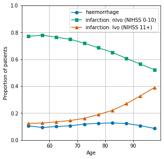
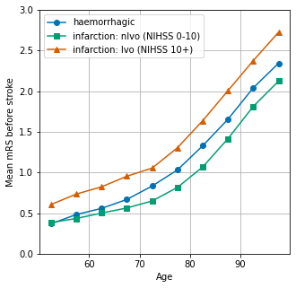

Analysis of stroke type and pre-stroke modified Rankin Scale by age
Contents
Analysis of stroke type and pre-stroke modified Rankin Scale by age#
The proportion of stroke types (haemorrhagic, nlvo ischaemic, lvo ischaemic) are shown by age.
NIHSS of 0-10, and 11+, are taken as surrogates of nlvo and lvo respectively.
The average mRS (modified Rankin Scale) is shown by age.
# import libraries
import matplotlib.pyplot as plt
import numpy as np
import pandas as pd
# Change default colour scheme:
plt.style.use('seaborn-colorblind')
# import data
data = pd.read_csv(
'./../data/2019-11-04-HQIP303-Exeter_MA.csv', low_memory=False)
Get occurance of ischaemic and haemorrgahic by age
ages = []
for group in data.S1AgeOnArrival.values:
minage, maxage = group.split(',')
minage = int(''.join(list(minage)[1:]))
maxage = int(''.join(list(maxage)[:-1]))
ages.append(np.median([minage,maxage]))
data['Age_midpoint'] = ages
# Censor data to 40-100
mask = (data['Age_midpoint'] > 50) & (data['Age_midpoint'] <100)
data = data[mask]
# Remove unknown stroke stype or NIHSS
data.dropna(subset=['S2StrokeType'], inplace=True)
data.dropna(subset=['S2NihssArrival'], inplace=True)
# Add row for counting
data['count'] = 1
results = pd.DataFrame()
results.index.name='Age midpoint'
# Count all by age
results['all'] = data.groupby('Age_midpoint').count()['count']
# Get ischaemic strokes
mask = data['S2StrokeType'] == 'Infarction'
results['infarction'] = data[mask].groupby('Age_midpoint').count()['count']
# Get haemorrhagic stroke
mask = data['S2StrokeType'] == 'Primary Intracerebral Haemorrhage'
results['haemorrhage'] = data[mask].groupby('Age_midpoint').count()['count']
# Calculate proportion haemorrhagic
results['prop_haemorrhage'] = results['haemorrhage'] / results['all']
# Show results
results
| all | infarction | haemorrhage | prop_haemorrhage | |
|---|---|---|---|---|
| Age midpoint | ||||
| 52.5 | 9334 | 8346 | 988 | 0.105850 |
| 57.5 | 12394 | 11235 | 1159 | 0.093513 |
| 62.5 | 15967 | 14359 | 1608 | 0.100708 |
| 67.5 | 21406 | 19130 | 2276 | 0.106325 |
| 72.5 | 28421 | 25049 | 3372 | 0.118645 |
| 77.5 | 33288 | 29138 | 4150 | 0.124670 |
| 82.5 | 37404 | 32638 | 4766 | 0.127420 |
| 87.5 | 32585 | 28577 | 4008 | 0.123001 |
| 92.5 | 18260 | 16298 | 1962 | 0.107448 |
| 97.5 | 5489 | 5014 | 475 | 0.086537 |
Add breakdown of ischaemic strokes by nLVO (NIHSS 0-10) and LVO (NIHSS 11+)
# NIHSS 0-10 is a surrogate for non large vessel occlusions
mask = (data['S2StrokeType'] == 'Infarction') & (data['S2NihssArrival'] < 11)
results['nlvo'] = data[mask].groupby('Age_midpoint').count()['count']
# NIHSS 11+ is a surrogate for non large vessel occlusions
mask = (data['S2StrokeType'] == 'Infarction') & (data['S2NihssArrival'] >10)
results['lvo'] = data[mask].groupby('Age_midpoint').count()['count']
# Calculate proportions
results['prop_nlvo'] = results['nlvo'] / results['all']
results['prop_lvo'] = results['lvo'] / results['all']
# Check proportions add up
results['checksum'] = \
results['prop_haemorrhage'] + results['prop_nlvo'] + results['prop_lvo']
# Show results
results
| all | infarction | haemorrhage | prop_haemorrhage | nlvo | lvo | prop_nlvo | prop_lvo | checksum | |
|---|---|---|---|---|---|---|---|---|---|
| Age midpoint | |||||||||
| 52.5 | 9334 | 8346 | 988 | 0.105850 | 7188 | 1158 | 0.770088 | 0.124063 | 1.0 |
| 57.5 | 12394 | 11235 | 1159 | 0.093513 | 9668 | 1567 | 0.780055 | 0.126432 | 1.0 |
| 62.5 | 15967 | 14359 | 1608 | 0.100708 | 12197 | 2162 | 0.763888 | 0.135404 | 1.0 |
| 67.5 | 21406 | 19130 | 2276 | 0.106325 | 16022 | 3108 | 0.748482 | 0.145193 | 1.0 |
| 72.5 | 28421 | 25049 | 3372 | 0.118645 | 20452 | 4597 | 0.719609 | 0.161747 | 1.0 |
| 77.5 | 33288 | 29138 | 4150 | 0.124670 | 22826 | 6312 | 0.685713 | 0.189618 | 1.0 |
| 82.5 | 37404 | 32638 | 4766 | 0.127420 | 24391 | 8247 | 0.652096 | 0.220484 | 1.0 |
| 87.5 | 32585 | 28577 | 4008 | 0.123001 | 19777 | 8800 | 0.606936 | 0.270063 | 1.0 |
| 92.5 | 18260 | 16298 | 1962 | 0.107448 | 10305 | 5993 | 0.564348 | 0.328204 | 1.0 |
| 97.5 | 5489 | 5014 | 475 | 0.086537 | 2873 | 2141 | 0.523410 | 0.390053 | 1.0 |
Plot results
fig = plt.figure(figsize=(5,5))
ax = fig.add_subplot()
ax.plot(results['prop_haemorrhage'], marker='o', label='haemorrhage')
ax.plot(results['prop_nlvo'], marker='s', label='infarction: nlvo (NIHSS 0-10)')
ax.plot(results['prop_lvo'], marker = '^', label='infarction: lvo (NIHSS 11+)')
ax.set_ylabel('Proportion of patients')
ax.set_xlabel('Age')
ax.set_ylim(0, 1)
ax.grid()
plt.legend()
plt.savefig('./output/stroke_type_by_age.jpg', dpi=300)
plt.show()

Show mRS by age#
mrs_results = pd.DataFrame()
mrs_results.index.name='Age midpoint'
# Get prestroke mRS for all patients
mrs_results['all'] = data.groupby('Age_midpoint').mean()['S2RankinBeforeStroke']
# Get prestroke mRS for haemorrgagic patients
mask = data['S2StrokeType'] == 'Primary Intracerebral Haemorrhage'
mrs_results['haemorrhage'] = \
data[mask].groupby('Age_midpoint').mean()['S2RankinBeforeStroke']
# Get prestroke mRS for nlvo patients
mask = (data['S2StrokeType'] == 'Infarction') & (data['S2NihssArrival'] < 11)
mrs_results['nlvo'] = \
data[mask].groupby('Age_midpoint').mean()['S2RankinBeforeStroke']
# Get prestroke mRS for lvo patients
mask = (data['S2StrokeType'] == 'Infarction') & (data['S2NihssArrival'] >10)
mrs_results['lvo'] = \
data[mask].groupby('Age_midpoint').mean()['S2RankinBeforeStroke']
fig = plt.figure(figsize=(5,5))
ax = fig.add_subplot()
ax.plot(mrs_results['haemorrhage'], marker = 'o', label='haemorrhagic')
ax.plot(mrs_results['nlvo'], marker = 's', label='infarction: nlvo (NIHSS 0-10)')
ax.plot(mrs_results['lvo'], marker = '^', label='infarction: lvo (NIHSS 10+)')
ax.set_ylabel('Mean mRS before stroke')
ax.set_xlabel('Age')
ax.set_ylim(0, 3)
ax.legend()
ax.grid()
plt.savefig('./output/mrs_by_age.jpg', dpi=300)
plt.show()
